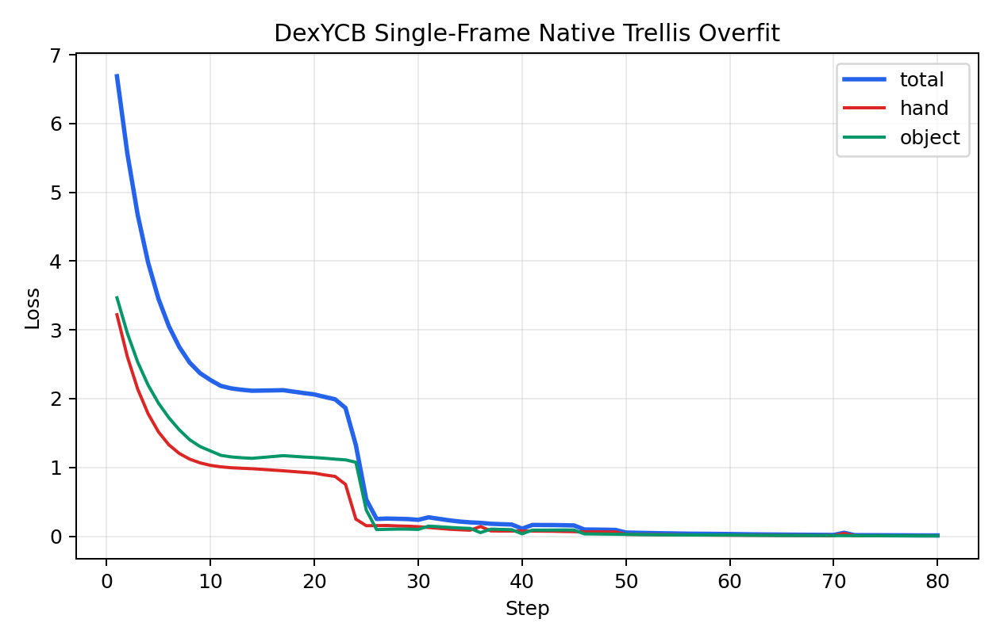
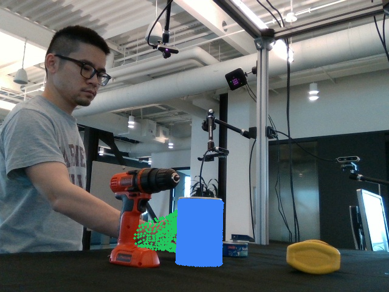
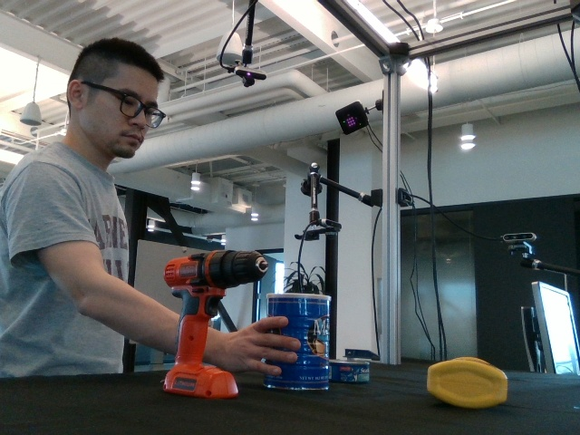

Loss Curve
The loss drops rapidly on CUDA over 80 steps, but that numeric convergence is misleading because the final mesh extraction is empty for both hand and object.
This rerun keeps the current decoder-output convention and forces a single-image overfit on
20200709-subject-01/20200709_141754/836212060125 frame 000030.
The optimization converges numerically, but both predicted meshes collapse to empty outputs.
This makes the run useful as evidence that low TRELLIS geometry loss alone is not yet a valid
success criterion under the current normalized-space decoder path.

The loss drops rapidly on CUDA over 80 steps, but that numeric convergence is misleading because the final mesh extraction is empty for both hand and object.

Ground-truth projection confirms frame 30 is a valid hand-object interaction frame and not an empty opening frame.

No predicted mesh survives extraction. The overlay is effectively empty, matching the zero predicted-vertex count in the summary.

Left is GT and right is Pred. This makes the current failure mode obvious: valid supervision on the left, empty prediction on the right.
This node locks the experiment to frame 30 through the new explicit frame-selection path, rather than relying on the first visible-hand frame heuristic.
The current normalized-space decoder path can minimize the TRELLIS geometry objective while still collapsing to empty extracted meshes. That is a real failure mode, not a successful overfit.